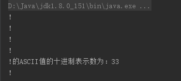

基础语法复习
Java特点
- 面向对象
- 简单性：(相对于C和C++来说)Java不需要程序员操作内存
- 跨平台：一次编译，到处运行(JVM)
- 多线程：其他语言的对线程一般是系统级别的，Java的多线程是语言级别的
- 动态编译：(相对于C或者C++来说)，在一个项目中，如果要修改一个java文件的话，那么就修改这一个文件就可以了，其他的java文件不需要动。
垃圾回收机制(gc)
Java不需要程序员释放内存，就是因为Java中有gc
- Java中垃圾回收处理的特点：
- 1.由虚拟机通过垃圾回收线程自动完成。
- 2.只有当对象不再被使用，它的内存才会有可能被回收，如果虚拟机认为系统不需要额外的内存，即对象不再使用，内存也不会回收。
- 3.程序无法显示迫使垃圾回收机器立即回收，可以通过java.lang.System.gc()/java.lang.Runtime.gc()建议虚拟机回收对象。
- 4.垃圾回收器线程在释放无用对象占用内存之前会先行调用对象的finalize()方法。
Java代码安全
Java程序执行流程
编写.java文件->编译为.class文件->类加载->字节码验证->JIT运行
类加载：加载字节码文件,双亲委托机制,把我们写好并编译成的.class字节码文件从硬盘中加载到内存中
- 字节码验证：
- 验证代码是否和虚拟机版本匹配，版本向下兼容
- 代码不能破坏系统的完整性，也就是不能操作硬件
- 无堆栈上溢和下溢
- 参数类型是否正确
- 类型转换是否正确
- 类加载器：
- 1.启动类加载器：rt.jar
- 2.扩展类加载器：jre/lib/ext/
- 3.系统类加载器：自己的class
- 4.网络类加载器
双亲委托机制：向上委托，向下加载
标识符
给类、接口、方法等变量起名字时使用的字符序列
由英文大小写字母、数字字符、$和_组成。不能使用关键字，并且不能以数字开头，区分大小写
基本数据类型
boolean：true或false。在JVM中会转换为0或1
byte：8位整数
short：16位整数
char：16位unicode字符
int：32位整数
float：32位浮点数
double：64位浮点数
long：64位整数
1字节=8bit
char的几种赋值方式
1 | public class CharTest { |

二、八、十六及Unicode编码形式进行赋值
在jdk1.7之后，就可以使用二进制数开始赋值
1 | 二进制用0b开头，比如：0b10,由0,1组成。 |
转义字符
对于有些特殊字符，比如单引号，如果不知道它的Unicode字符编码，直接从键盘输入，会编译出错。
1 | char c = ''';//编码出错 |
类型转换
- (1)隐式类型转换：byte,short,char类型数据在进行数据运算的时候，会自动提升为int，其他类型运算时，表示范围小的会自动提升为大的，然后再运算，小类型可以直接赋值给大类型，类型自动转换为大的。
- (2)显示类型转换：赋值过程中，大类型赋值给小类型会报错，出现精度损失，必须通过强制类型转换来实现
1 | public class Test { |
变量
Java中变量：
- 程序的基本功能是处理数据
- 程序用变量来接收并表示数据
- 程序中必须先定义变量才能使用
- 定义变量是指设定变量的数据类型和变量的名字，Java语言要求变量遵循先定义，再初始化，然后再使用的规则。
变量的使用有一个作用域的问题，作用域是指它的存在范围，只有在这个范围内，程序代码才能访问它。作用域决定了变量的生命周期，按照作用域不同，可以分为以下类型：
- 成员变量：在类中声明，它的作用域是整个类；成员变量又叫做属性/实例变量
- 局部方法：在一个方法的内部或方法的一个代码块的内部声明。如果在一个方法内部声明，它的作用域是整个方法；如果在一个方法的某个代码块的内部声明，它的作用域是这个代码块。代码块是指位于一对大括号”{}”以内的代码。
- 方法参数：方法或者构造方法的参数，它的作用域是整个方法或者构造方法。
- 异常处理参数：和方法参数很相似，差别在于前者是传递参数给异常处理代码块，而后者是传递参数给方法或者构造方法。异常处理参数是指catch(Exception e)语句中的异常参数”e”，它的作用域是紧跟着catch(Exception e)语句后的代码块。
注意：
实例变量有默认值，使用之前可以不初始化；
基本类型中：
整型变量的默认值都是0
浮点型的默认值都是0.0
char默认值’\u0000’
boolean默认值是false
引用类型默认值都是null
1 | public class Test1 { |
操作符
操作符就是对常量和变量进行操作的符号
分类：数学运算符、赋值运算符、比较运算符、三目运算符
(1)数学运算符
+、-、*、/、%、++、–
(2)赋值运算符
=、 *=、/= 、%= 、+= 、-=
(3)比较操作符
>大于
>= 大于等于
*< 小于*
*<= 小于等于*
注意
instanceof：判断一个引用类型所引用的对象是否是有个类的实例。该操作符左边是一个引用类型，右边是一个类名或者接口名。
1 | public class InstanceofTest { |